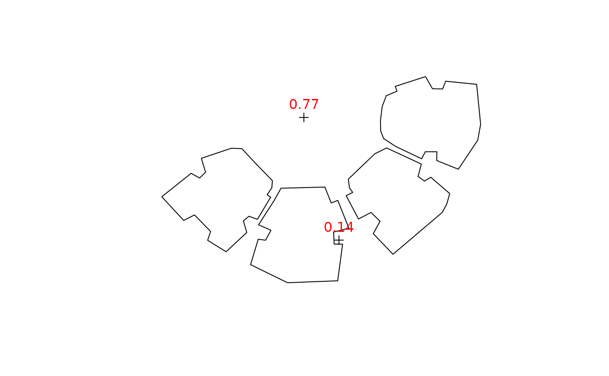

Calculates the Sky View Factor (SVF) at given points or complete grid (location), taking into account obstacles outline (obstacles) given by a polygonal layer with a height attribute (obstacles_height_field).
# S4 method for SpatialPoints SVF( location, obstacles, obstacles_height_field, res_angle = 5, b = 0.01, parallel = getOption("mc.cores") ) # S4 method for Raster SVF( location, obstacles, obstacles_height_field, res_angle = 5, b = 0.01, parallel = getOption("mc.cores") )
| location | A |
|---|---|
| obstacles | A |
| obstacles_height_field | Name of attribute in |
| res_angle | Circular sampling resolution, in decimal degrees. Default is 5 degrees, i.e. 0, 5, 10... 355. |
| b | Buffer size when joining intersection points with building outlines, to determine intersection height |
| parallel | Number of parallel processes or a predefined socket cluster. With |
A numeric value between 0 (sky completely obstructed) and 1 (sky completely visible).
If input location is a SpatialPoints*, then returned object is a vector where each element representing the SVF for each point in location
If input location is a Raster*, then returned object is a RasterLayer where cell values express SVF for each ground location
SVF calculation for each view direction follows the following equation - $$1 - (sin(\beta))^2$$ Where \(\beta\) is the highest elevation angle (see equation 3 in Gal & Unger 2014).
Erell, E., Pearlmutter, D., & Williamson, T. (2012). Urban microclimate: designing the spaces between buildings. Routledge.
Gal, T., & Unger, J. (2014). A new software tool for SVF calculations using building and tree-crown databases. Urban Climate, 10, 594-606.
## Individual locations location0 = rgeos::gCentroid(build) location1 = raster::shift(location0, 0, -15) location2 = raster::shift(location0, -10, 20) locations = rbind(location1, location2) svfs = SVF( location = locations, obstacles = build, obstacles_height_field = "BLDG_HT" ) plot(build)if (FALSE) { ## Grid ext = as(raster::extent(build), "SpatialPolygons") r = raster::raster(ext, res = 5) proj4string(r) = proj4string(build) pnt = raster::rasterToPoints(r, spatial = TRUE) svfs = SVF( location = r, obstacles = build, obstacles_height_field = "BLDG_HT", parallel = 3 ) plot(svfs, col = grey(seq(0.9, 0.2, -0.01))) raster::contour(svfs, add = TRUE) plot(build, add = TRUE, border = "red") ## 3D points ctr = rgeos::gCentroid(build) heights = seq(0, 28, 1) loc3d = data.frame( x = coordinates(ctr)[, 1], y = coordinates(ctr)[, 2], z = heights ) coordinates(loc3d) = ~ x + y + z proj4string(loc3d) = proj4string(build) svfs = SVF( location = loc3d, obstacles = build, obstacles_height_field = "BLDG_HT", parallel = 3 ) plot(heights, svfs, type = "b", xlab = "Elevation (m)", ylab = "SVF", ylim = c(0, 1)) abline(v = build$BLDG_HT, col = "red") ## Example from Erell et al. 2012 (p. 19 Fig. 1.2) # Geometry pol1 = rgeos::readWKT("POLYGON ((0 100, 1 100, 1 0, 0 0, 0 100))") pol2 = rgeos::readWKT("POLYGON ((2 100, 3 100, 3 0, 2 0, 2 100))") pol = sp::rbind.SpatialPolygons(pol1, pol2, makeUniqueIDs = TRUE) pol = sp::SpatialPolygonsDataFrame(pol, data.frame(h = c(1, 1)), match.ID = FALSE) pnt = rgeos::readWKT("POINT (1.5 50)") plot(pol, col = "grey", xlim = c(0, 3), ylim = c(45, 55)) plot(pnt, add = TRUE, col = "red") # Fig. 1.2 reproduction h = seq(0, 2, 0.1) svf = rep(NA, length(h)) for(i in 1:length(h)) { pol$h = h[i] svf[i] = SVF(location = pnt, obstacles = pol, obstacles_height_field = "h", res_angle = 1) } plot(h, svf, type = "b", ylim = c(0, 1)) # Comparison with SVF values from the book test = c(1, 0.9805806757, 0.9284766909, 0.8574929257, 0.7808688094, 0.7071067812, 0.6401843997, 0.5812381937, 0.52999894, 0.4856429312, 0.4472135955, 0.4138029443, 0.3846153846, 0.3589790793, 0.336336397, 0.316227766, 0.2982749931, 0.282166324, 0.2676438638, 0.2544932993, 0.242535625) range(test - svf) }